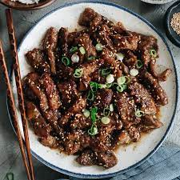

Sesame Beef

Description
Strips of steak and chopped scallions are marinated with soy sauce and garlic,
then quickly stir fried with sesame seeds. Add a little sesame oil to the
marinade and serve with rice.
Ingredients
- 4 tablespoons soy sauce
- 2 tablespoons sugar
- 1 tablespoons sesame oil
- 3 teaspoons minced garlic
- 1 diced onion
- 1 diced green bell pepper
- 1 tablespoon chili flakes
- 2 tablespoons sesame seeds
- green onions to garnish
- beef of choice
Steps
- Add the beef to the marinade created with the soy sauce, sugar, sesame oil,
and minced garlic (overnight is the best option, the longer the better).
- When done marinating, heat a pan and cook the onions + bell pepper
- After vegetables are cooked through, add the beef + marinade and mix
with the vegetables.
- When the beef is almost cooked through, add the sesame seeds + chili
flakes and cook for 2 more minutes. Serve.